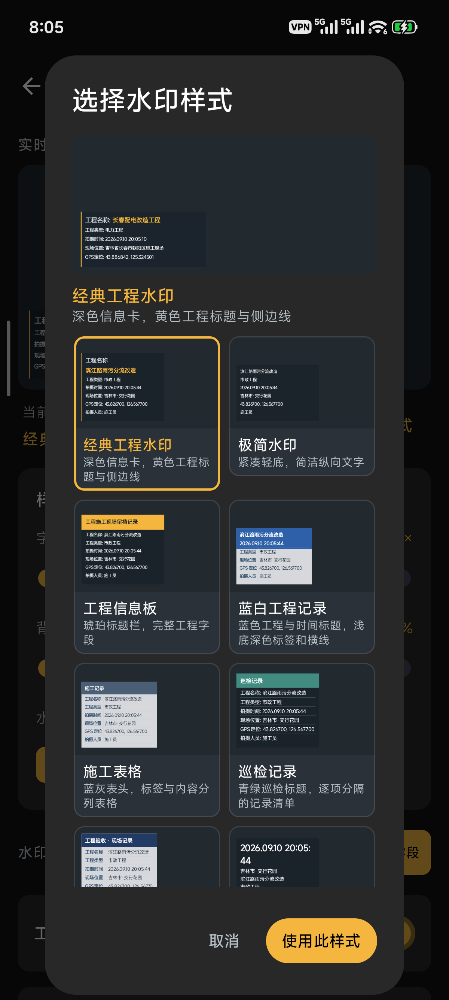
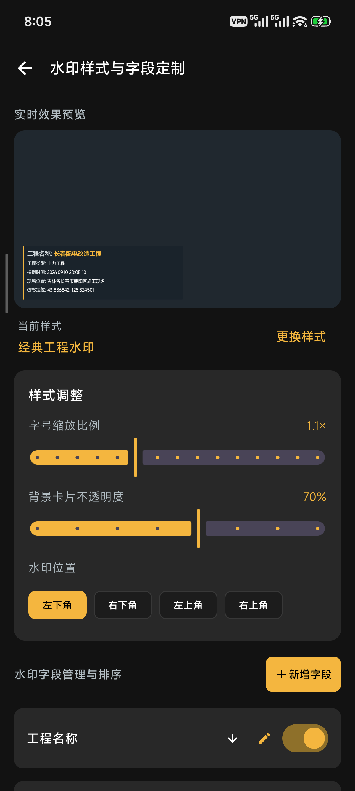
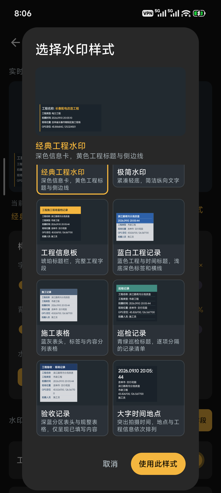
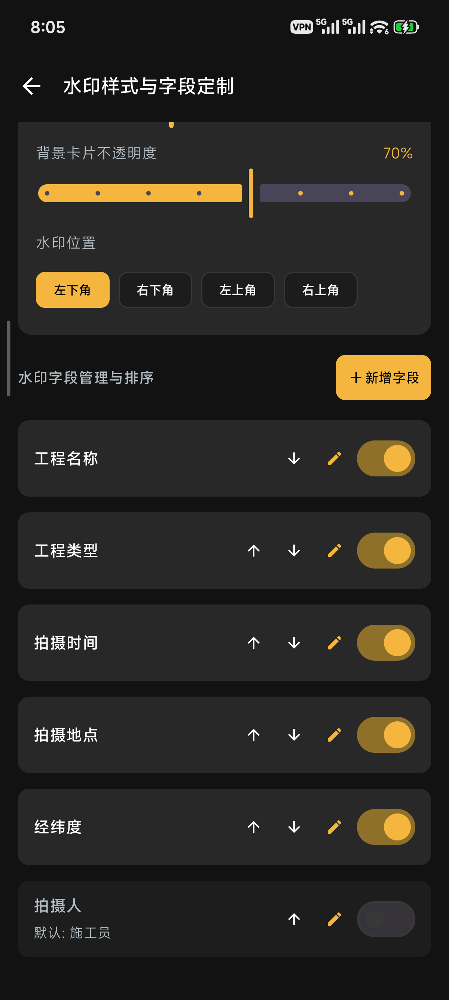
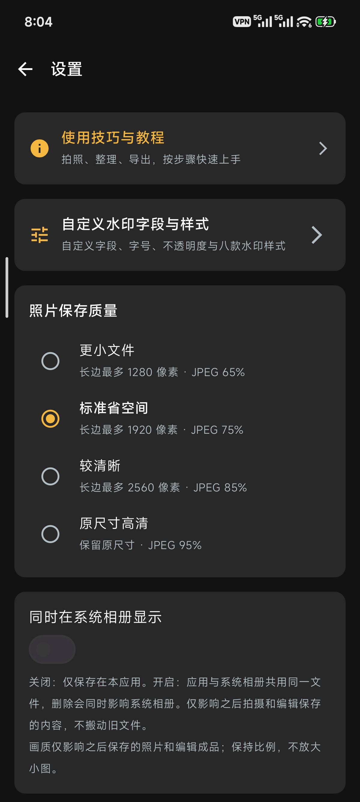
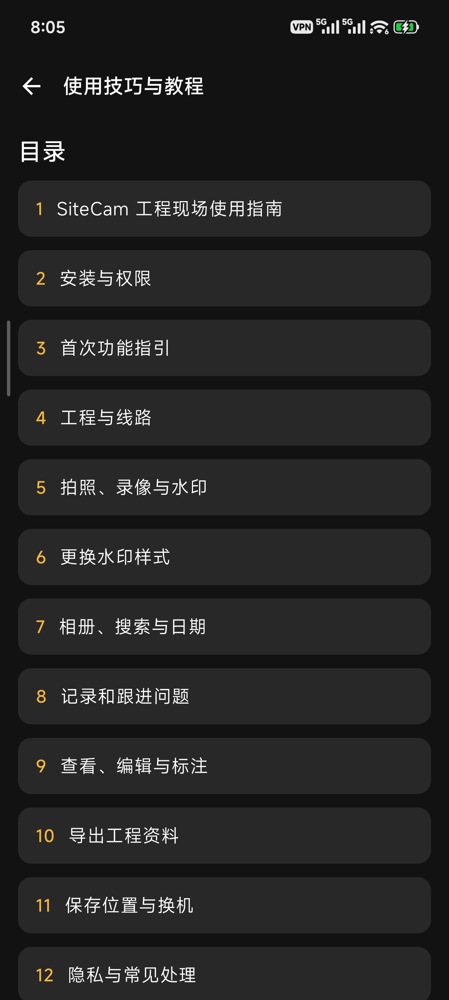

🎨 八款水印，选一个喜欢的
经典、极简、表格，按现场需要选择。
现场记录 · 工程整理
拍好现场照片，
整理好每个工程。
拍摄加水印、标记现场问题、按工程整理资料。
从第一次拍照，到最后一次交付。
支持 Android 8.0 及以上 · 鸿蒙开发版见下方说明

安卓真机截图 · 内置示例数据眼见为实
以下 6 张图片来自小米手机上的 v0.2.9，点击可查看大图。水印中的工程、地址和坐标是应用内置示例，不是使用者的真实资料或当前位置。

经典、极简、表格，按现场需要选择。

巡检、验收和大字时间，也都有对应样式。
调字号、底色深浅，把水印放在合适的角落。

工程名称、时间、地点，可以开关、添加和排序。

四档画质，兼顾清晰度和手机空间。

没有网络，也能查看拍照、整理和导出步骤。
从拍摄到交付
填好工程名称，需要时加上线路、地点。不同项目分开整理。
选好水印，拍下现场。发现问题就标记，后续跟进处理。
按日期查找资料，照片可以裁剪、画箭头、写文字。整理好后导出压缩包或文件夹。
选择你的设备
支持 Android 8.0 及以上。新增折叠屏支持（Beta）。默认下载 Release，推荐日常自用安装。
↓ 下载 Release（推荐自用）下载 Debug 调试版 · 可与 Release 共存，数据独立
正在适配普通手机、折叠屏和平板。目前提供的是未签名开发包，不能作为普通真机安装包。真实平板、折叠悬停和视频拍摄还要继续验证。
查看开发包🍎 iPhone / iPad 版开发中，暂时没有安装包。
使用前的小提醒
默认保存在应用内。卸载或换机前，请先导出需要保留的资料。
安卓版开启“同时在系统相册显示”后，两边共用同一份文件。系统相册删除后，应用会同步隐藏；从回收站恢复后会重新显示。鸿蒙版的“另存到系统相册”会多存一份，两份互不影响。
不需要注册账号。拒绝定位仍可拍照，拒绝录音仍可录制无声视频。
可以在 GitHub 提交问题。请说明手机型号、版本和操作步骤；发截图前记得遮住个人信息。
工具的事，让 SiteCam 帮你。
选择下载版本 ↑